Case Study: MOBILE-FIRST RESPONSIVE WEBSITE
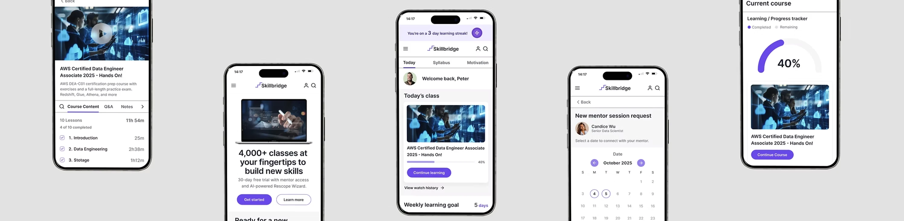
Skillbridge — Personalized Learning Platform
A conceptual learning platform designed to help learners stay motivated and on track through personalized study plans, clear progress tracking, and on demand mentorship.
Background
The Problem
With technology and careers evolving rapidly, continuous learning is essential, yet many learners struggle to stay consistent amid busy schedules and information overload. I fall into this category myself, which is why I started this project to understand what truly motivates learners and to explore solutions that help them stay engaged over time. My hypothesis was that learners stay engaged longer when supported by a personalized AI generated study plan and the option to connect with a professional network for accountability, encouragement, and opportunities.
Empathize
User Interviews
Goal
I wanted to understand how people approach learning new skills and what helps them stay motivated and consistent over time in order to plan an app that supports learners more effectively.
Approach
I conducted 6 in-depth user interviews with career changers, professionals, and hobby learners.
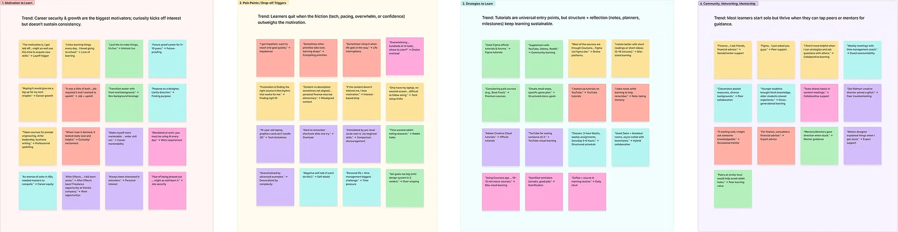
Affinity Map
View Affinity MapKey Findings
Using insights from user interviews, I created an affinity map to synthesize patterns across participants. The analysis revealed that while learners approach new skills with strong motivation, their success is shaped less by enthusiasm alone and more by the structure, resources, and support systems surrounding them, with several key themes emerging across six participants.
- Motivation & Consistency Learners begin motivated by career goals, curiosity, or identity, but their momentum fades without consistent reinforcement or reminders.
- Pain Points Scattered resources, mismatched courses, and technical limitations often derail learning progress.
- Strategies & Behaviors Learners create self-made systems like tutorials, notes, and planners, but these are often fragile, inconsistent, and eventually abandoned.
- Community & Mentorship Learners value support during moments of struggle but don't always seek constant community interaction.
- Accountability & Structure Time blocking, gamification, and reminders help sustain habits, but systems must stay flexible — too rigid leads to burnout, too soft to neglect.
Competitive Analysis
For my competitive analysis, I researched Wisdom Plan, Coursera, Duolingo, and Habitica to see how different learning and habit building platforms support motivation, accountability, and sustained engagement.
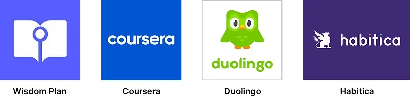
Opportunity: I found that none of the competitors combine structure, motivation, and personalized support in a single platform.
Define
User Personas
Creating user personas helped me better understand learners' goals, challenges, and motivations. The research revealed two core learner types: experienced professionals seeking quick, practical skill upgrades and learners navigating career transitions who need structure and accountability. These insights guided me to focus on flexibility, clear pathways, and motivation support as core principles for SkillBridge.
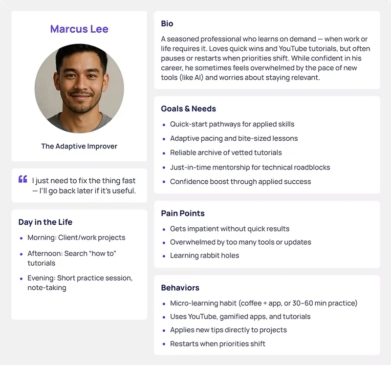
Marcus Lee — The Adaptive Improver
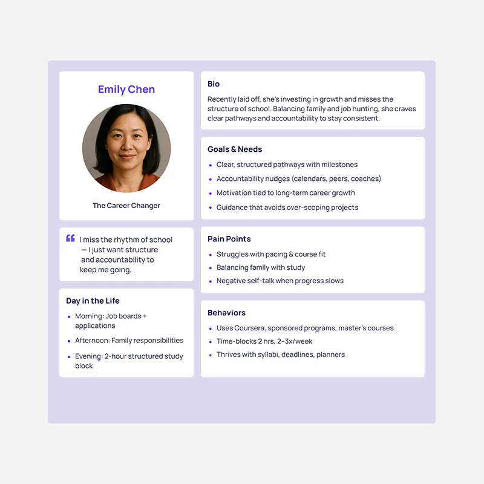
Emily Chen — The Career Changer
Learners often feel overwhelmed by too many tools, poor course fit, or technical barriers. This mismatch between expectations and reality causes frustration and drop-off.
How Might We Questions
- How might we provide on-demand mentorship/peer support without forcing constant interaction?
- How might we prevent learners from feeling overwhelmed or lost in rabbit holes?
Ideate
Priority Features & Information Architecture
Priority Features
Drawing from user interviews, competitive analysis, and persona insights, I identified the core pain points learners face and translated them into a focused MVP that prioritizes structure, motivation, and accountability.
Information Architecture
By creating this sitemap, I established a clear flow between the website's key sections, providing a blueprint for an experience that feels organized and easy to explore.
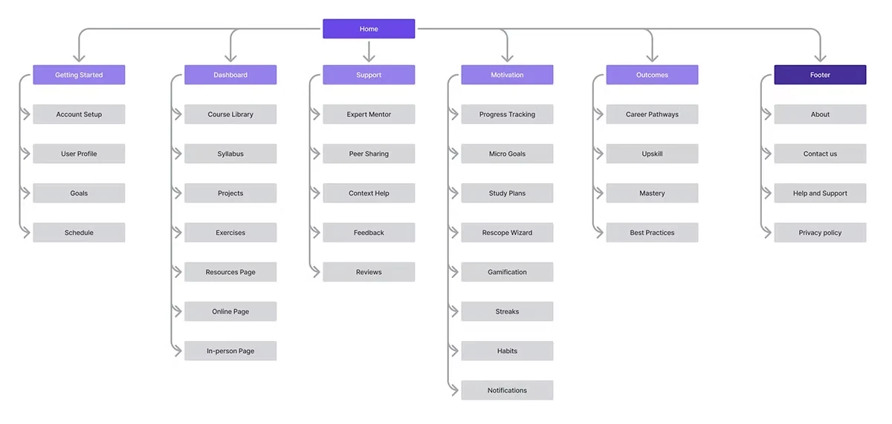
User Flows
Creating two user flows helped me visualize how users move through key actions like setting goals or booking a mentor and identify friction points early. It translated user needs into clear, testable interactions that shaped the structure of wireframes and prototypes.
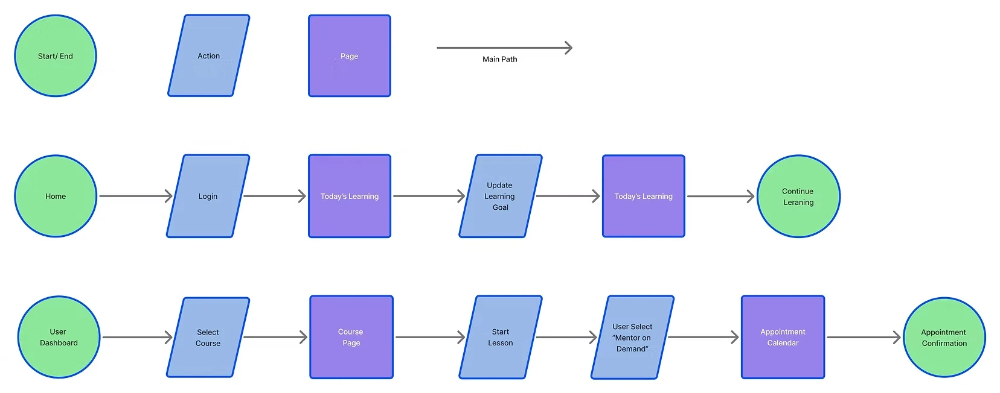
Design
Mid-Fidelity Wireframes
Next, I moved into mid-fidelity wireframes to focus on layout and information hierarchy without the distraction of visual styling. This step allowed me to gather early feedback on structure and user flow, helping guide iterations before moving into higher-fidelity design.
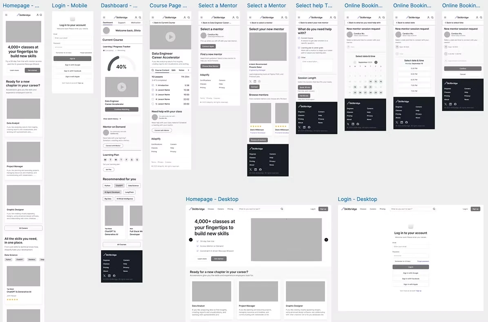
Prototype
High-Fidelity Prototype
I translated research insights into an interactive prototype focused on daily usability and motivation flow.
Key Screens
- Dashboard / Today's Class Displays weekly targets, streaks, and upcoming milestones.
- Weekly Learning Goal Flow Screens that let users adjust their weekly learning goal.
- Mentor Booking Flow Lets users quickly choose a topic, session length, and time, then confirm their session.
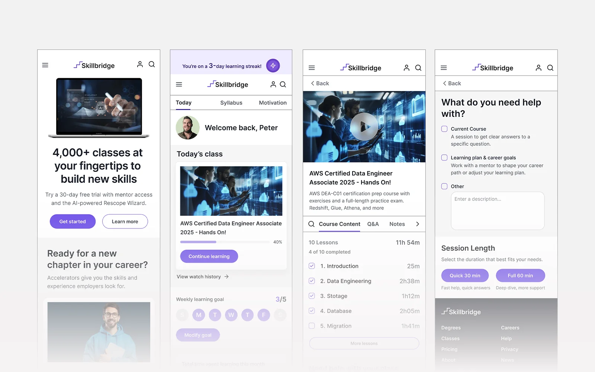
Visual Identity
SkillBridge's design is built around clarity and growth. With purple as the primary color for creativity and ambition, paired with clean type and simple layouts, the product feels motivating and easy to use, aligning with what my personas value most: structure, support, and confidence in their learning. For the logo, I wanted to represent both a bridge and progress, so I used a simplified staircase shape to symbolize upward growth.
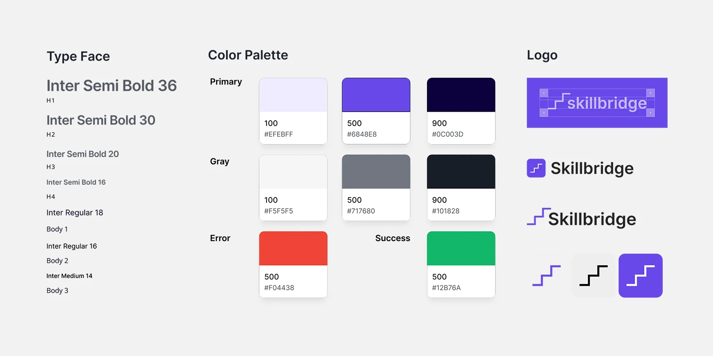
Brand Guidelines
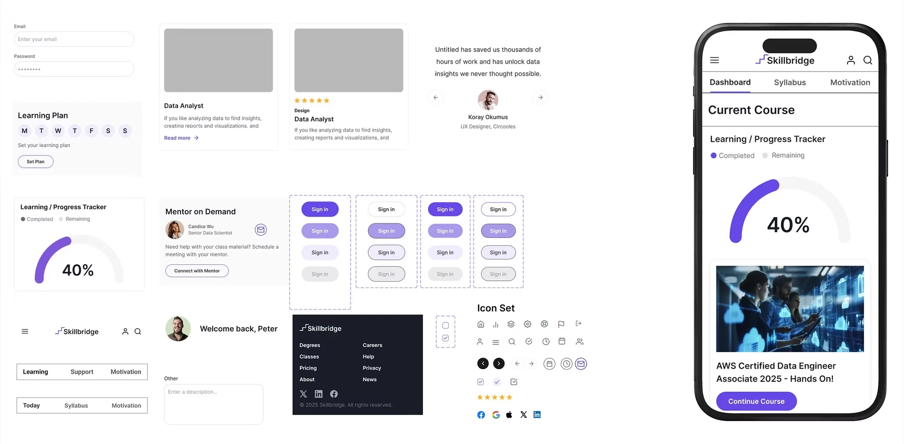
UI Component Library
I created a simple UI component library to ensure visual consistency and speed up iteration across the SkillBridge interface. Establishing these shared building blocks made the design more scalable and allowed me and future designers to prototype and update screens more efficiently.
Usability Test
Test Goals & Objectives
I ran remote usability testing to validate two core journeys: (1) ensuring first-time mobile users could modify their weekly study goals and seamlessly resume Today's Class, and (2) confirming they could schedule a Mentor on Demand session end to end without moderator help. The sessions focused on measuring clarity, findability, and decision friction across both flows.
Objectives
- Evaluate if learners can easily complete key tasks in SkillBridge.
- Test clarity of navigation and flow from login to dashboard and course content.
- Validate the Mentor on Demand scheduling process.
- Identify friction points, confusing steps, or areas needing refinement.
Method
- Format: Prototype walkthrough (moderated via Zoom recording).
- Participants: Five users (busy adult learners who balance work, family, and personal growth).
- Tasks: (1) Modify weekly study goals and (2) Mentor on Demand scheduling.
- Metrics: Ease of completion (1–7 scale), confidence, comprehension, tone/trust perception.
What Worked
The results were positive. Task completion was 100% across both tasks, with an average ease rating of ~6.7/7. Participant confidence averaged 5/5, and the overall impression was that the experience felt clean, intuitive, and motivating. Progress visuals and checklists were especially effective in supporting momentum.
Prioritized Changes
Usability testing revealed actionable insights that informed a prioritized set of design updates to improve clarity and flow.
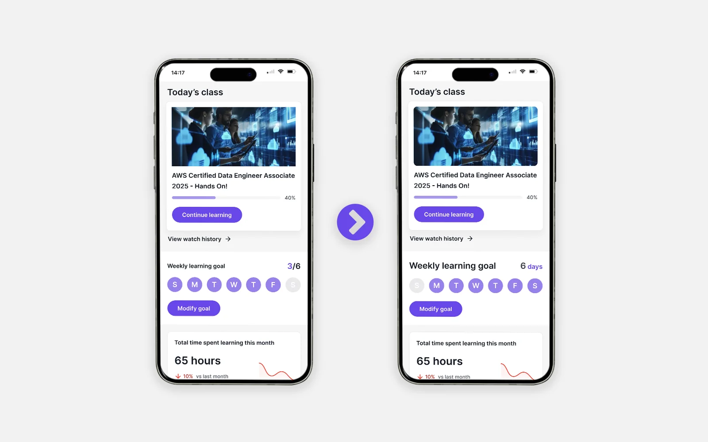
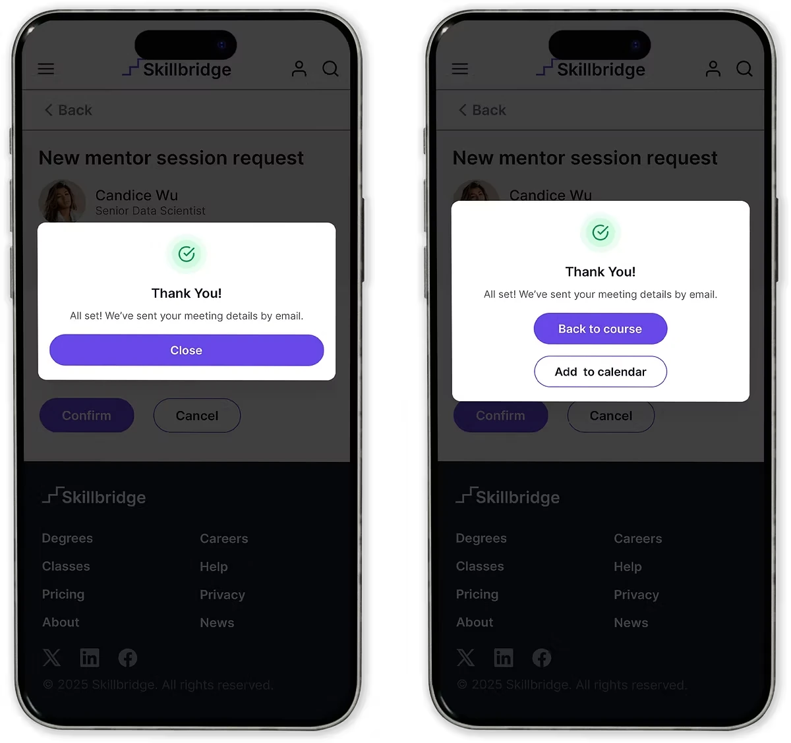
Final Design
Selected Screens
SkillBridge's design is about clarity and growth. With purple as the primary color for creativity and ambition, paired with clean type and simple layouts, the product feels motivating and easy to use. Every choice supports learners in staying consistent and confident.
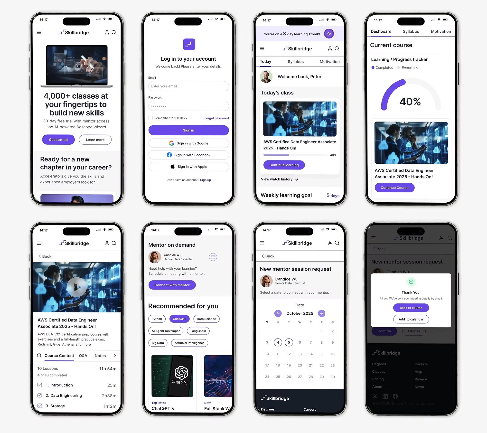
Explore the full interactive prototype in Figma
View Prototype →Conclusion
Key Takeaways
Working on SkillBridge taught me how much structure, clarity, and timely support matter in helping learners stay consistent. Through interviews, synthesis, wireframing, and usability testing, I learned to translate research into focused features, validate assumptions, and refine the experience based on real user behavior.
This project was ultimately about learning the UX process end to end — how to ask the right questions, test ideas early, and iterate with purpose. The insights I gained about motivation, goal-setting, and mentorship shaped a clearer, more supportive product direction and helped me grow as a designer.
Future Enhancements
- Prototype a live mentorship chat or instant help assistant to test user interest.
- Finish the desktop version of the platform.
- Create Rescope Wizard (AI) flow: Rebalances the learning plan based on user availability.
- Add streak notifications or adaptive reminders — but frame them as supportive, not gamified.
- Consider a mentorship matching logic concept: time zone, expertise, or learning goal filters.